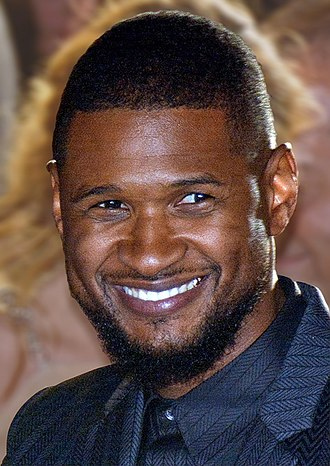

Vadims Random Profiles:
Usher Raymond IV
Also known by the alias Usher$$
Background information [1]
Usher Raymond IV (born October 14, 1978) is an American singer, songwriter, actor and businessman. He was born in Dallas, Texas, but raised in Chattanooga, Tennessee, until moving to Atlanta, Georgia. At the age of 12, his mother put him in local singing competitions before catching the attention of a music A&R from LaFace Records.
Fun facts: [2]
- Usher's real name is Usher Raymond IV, and his father's name is also Usher Raymond III, so he is technically Usher Raymond IV Jr.
- Usher is a trained chef and even owns his own restaurant in Atlanta called "The U Spot."
- Usher was once a contestant on "Star Search" when he was 13 years old, and he lost to a country singer.
- In 2007, Usher accidentally locked himself in a Berlin hotel room, forcing him to call security for help to escape.
- Usher is a part-owner of the Cleveland Cavaliers NBA team, and he even got to design their uniforms for the 2020-2021 season.

| Name | Usher Raymond IV |
|---|---|
| Date of Birth | October 14, 1978 |
| Place of Birth | Dallas, Texas, USA |
| Occupation |
Singer, songwriter, actor, dancer, businessman |
| Years Active | 1994 - present |
| Notable Hits |
"Yeah!", "U Remind Me", "Burn", "My Boo", "Love in This Club" |